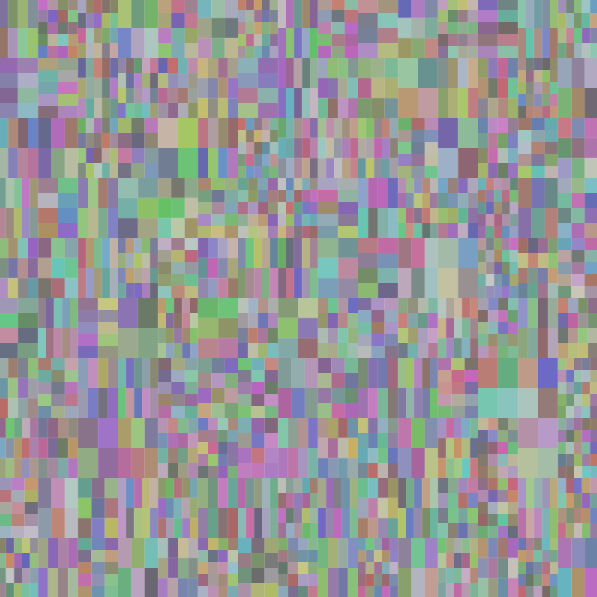
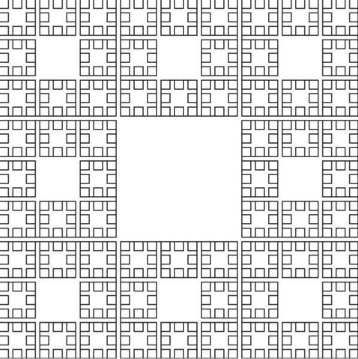
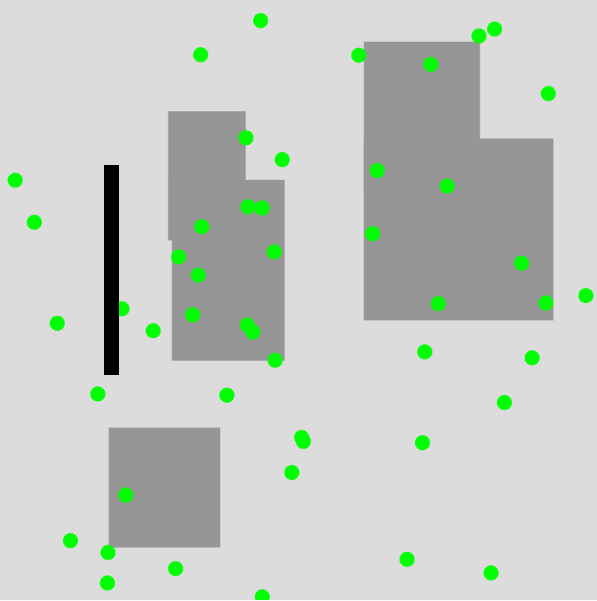
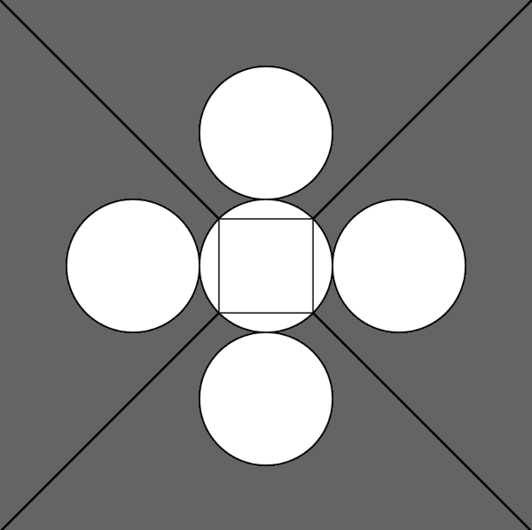

Projects
RANDOM COLORFULL CIRCLES
This project is based on the creation of a code that generates circles with random sizes, colors, and transparencies, and places them randomly on the screen.I used the P5 application to create this code.Press the play button and watch different colored circles fill the canvas!
RANDOM COLORFULL LINES
This project is based on the creation of a code that generates random lines connecting a random point on the top side of the canvas with a random point on the bottom side of the canvas, and each line has a random color.I used the P5 application to create this code.Press the play button and watch different colored lines fill the canvas!
SOL LE WIT
This project is based on the creation of a code that allows switching between the 6 geometric shapes of Sol LeWitt, which are placed at the mouse position and change with the press of any key on the keyboard.I used the P5 application to create this code.Press the play button, move your mouse to any position on the canvas, and press a random key on your computer to see a different geometric shape!
Click here to view the P5.js Sketch

Arrays & Iteration : COLORFULL SQUARES CELLS
This project involves creating a code that draws the image below using a double loop, dividing the canvas into a specified number of rows and columns to create square cells. These cells change to a random color when clicked with the mouse.I used the P5 application to create this code.Press the play button, move your mouse to any position on the canvas, and click a random square cell to see a different color!
Recursion: FRACTAL CITY
This project is based on the composition of an image which constructs the fractal pattern of the image below using recursion. A fractal is a pattern that repeats itself at different scales. I created an organized pattern which, in addition to the courtyards, also includes roads as shown in the image below. I used the P5 application to create this image. Just press play and watch the composition I created!
Computer Game: SNAKE
This project combines the concepts of arrays, loops, and conditionals to create an interactive computer game application. More specifically, I created my own version of the well-known digital game Snake. I used the P5 application to create this code. To play, press the play button and use the keys to guide the snake to collect food items and avoid obstacles. Every time the snake collects a food item, its body grows in length.
RSEUDOCODE:"Make Greek Coffee"
This project is based on creating a pseudocode for the production of a cup of Greek coffee.

GEOMETRIC SHAPES
This project is based on the composition of an image with various geometric shapes.I used the P5 application to create this image.Just press play and watch the composition I created!
©Dimitris Papanikolaou 2025